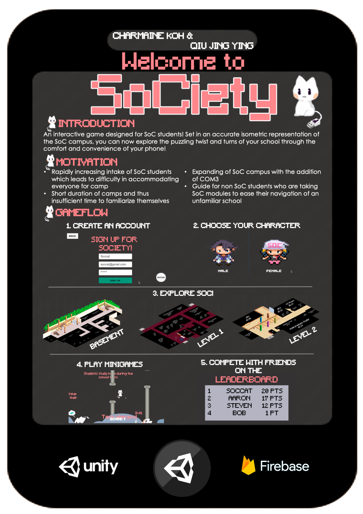
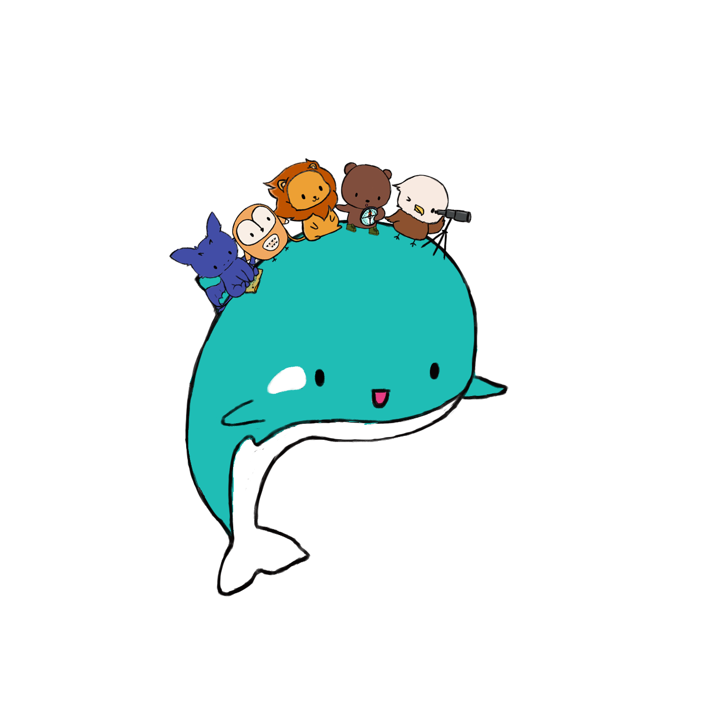

SoCiety
A Unity game designed for School of Computing freshmen to help them familiarise with the campus layout.
Sugar for Leo Bot

A python telegram bot built to faciliate the annual Angel-and-Mortal event in the House of Leo.
Cardi Buddy
A flash cards application that allows students to generate their own flash cards and test themselves through a simple Command Line Interface.
COVID-19 Bot
A python telegram bot built to help limit the number of people in the dining hall in the face of the COVID-19 situation.